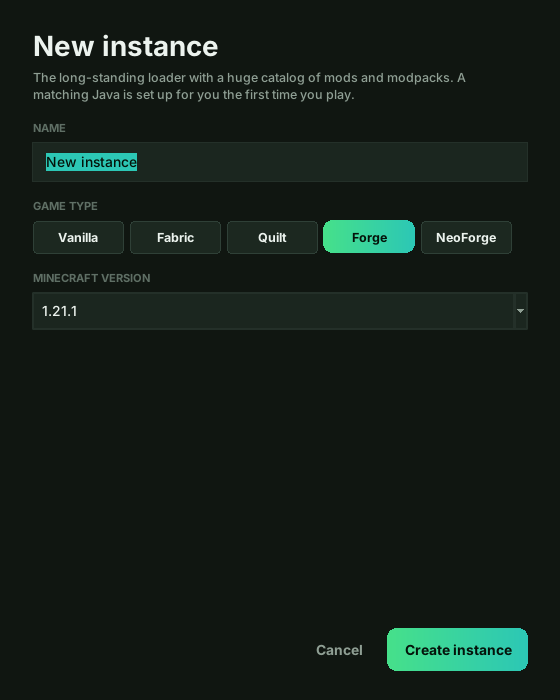
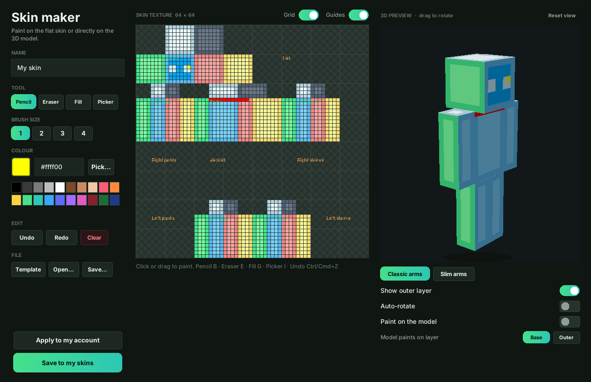
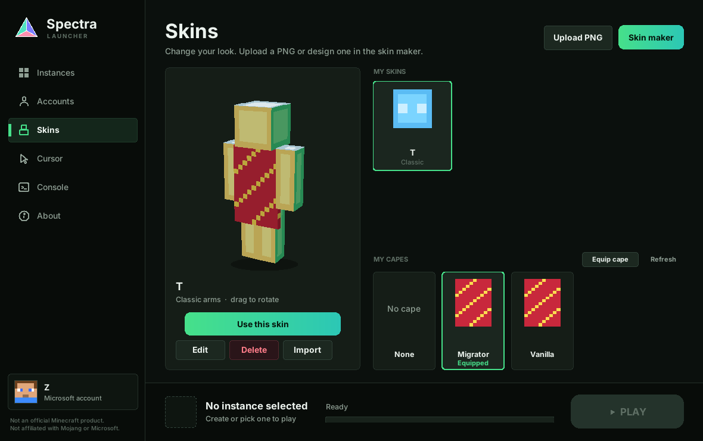
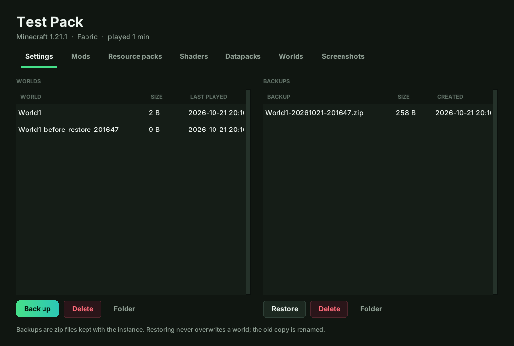
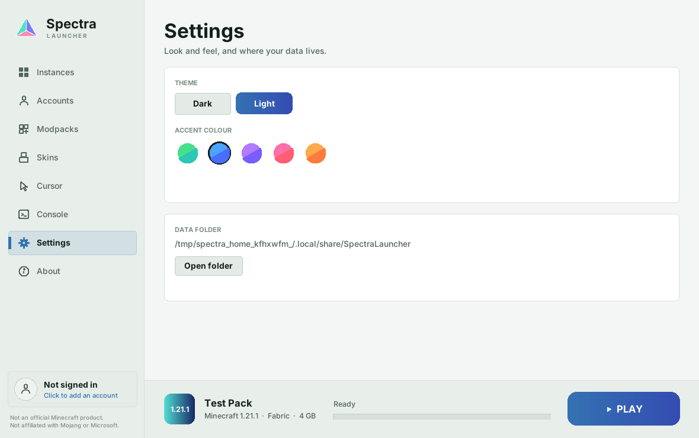

The Minecraft launcher, made simple.
Create separate game instances, install mods and their dependencies with a click, and play Minecraft: Java Edition with Vanilla, Fabric, Quilt, Forge or NeoForge. Sign in with your own Microsoft account.

About
Everything you need, nothing you don't.
Spectra is a small launcher that sets up the game, the mod loader and Java for you, then gets out of the way. Your data stays on your computer.
Your own account
Sign in with the Microsoft account that owns Minecraft: Java Edition. No license, authentication or safety checks are bypassed or disabled.
Native on three platforms
Windows, macOS and Linux builds from the same code, built in the open by GitHub Actions.
Open source
MIT licensed, a single readable file, and no servers of ours in the middle. Read it, fork it, change it.
Features
Built for how you actually play.
From a first vanilla world to a hundred-mod pack, each instance keeps its own version, loader, files and settings.
Instances
Keep separate installs with their own Minecraft version, mods, memory and Java settings. Duplicate, export and import them.
Automatic setup
Downloads the game files, your mod loader and a matching Java runtime for you.
Mod manager
Search Modrinth or CurseForge, install mods with their required dependencies, and enable, disable or remove them. Resource packs, shaders and datapacks too.
Modpacks
Install a Modrinth or CurseForge modpack as a new instance, or import one from Prism, MultiMC or a modpack file.
Skins and capes
Apply a skin, import your current one, or design one in the skin maker with a rotatable 3D preview. Equip capes you own.
Worlds and backups
Back up and restore worlds, browse screenshots, and see how long you've played.
Custom cursors
Pick a pointer style for the launcher, and optionally for the game itself.
Dark and light
Switch themes and pick an accent colour. Set window size, fullscreen or a server to join per instance.
Gallery
A look around.
Screenshots of the launcher itself.





How it works
Playing in five steps.
The first launch downloads everything it needs, which can take a few minutes.
- Download the launcher and open it.
- Click Accounts, then Add Microsoft account. A Microsoft page opens where you enter a short code and sign in. The code is copied to your clipboard for you.
- Click Add instance, pick a Minecraft version, and create it.
- Click Launch. The first launch downloads everything needed, which can take a few minutes.
- Open an instance's Settings to install mods, resource packs, shaders and datapacks, manage worlds, and set window or server options. The Modpacks page installs whole Modrinth modpacks.
Requirements: a Microsoft account that owns Minecraft: Java Edition, and an internet connection for the first launch. If you run the Python version you also need Python 3.8 or newer with tkinter.
Source
Built in the open.
Report a bug, read the code, or send a fix.
Privacy
Privacy policy.
Last updated: October 12, 2026
Spectra Launcher runs entirely on your computer. We do not run any servers, and we do not collect, receive or store any of your data.
What the launcher stores on your device
Your launcher settings, your instances and mods, and, if you sign in, your Minecraft username, UUID and the sign-in tokens issued by Microsoft and Mojang. These stay in the launcher's data folder on your device and are never sent to us. You can remove them at any time by removing the account in the launcher or deleting the folder.
Who the launcher connects to
- Microsoft, Xbox Live and Mojang, to sign you in and verify you own Minecraft
- Mojang, to download the game files
- Fabric, Quilt, Forge and NeoForge, to download the mod loader and its version lists
- Modrinth, to search for and download mods
- CurseForge, only if you add an API key in Settings, to search for and download mods and modpacks
- Adoptium, to download Java if you do not have a suitable version
- Mojang skin servers, only when you apply or import a skin
Their own privacy policies apply to those services.
Sign-in
Sign-in uses Microsoft's standard device code flow with the scope XboxLive.signin offline_access. We never see your Microsoft password.